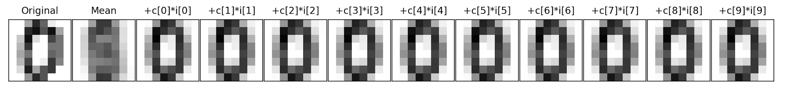

Program 11: Digit Dimensions
CSci 39542: Introduction to Data Science
Department of Computer Science
Hunter College, City University of New York
Spring 2022
Classwork Quizzes Homework Project
Program Description
Program 11: Digit Dimensions. Due noon, Thursday, 29 April.
PCA
P45 Compute captured variance, scree plots for PCA
Use dim red to show results of classifer, can print the labels as the points, and color by classifer?
compute instrinsic dimension in various ways.
In Lecture 22 and (also in Chapter 25), we used scree plots to provide a visualization of the captured variance. This assignment asks you to implement two other popular ways of determining the number of dimensions to retain.
Learning Objective: to increase facility with standard linear algebra approaches for high dimensional data.
Available Libraries: pandas, pickle, sklearn, and core Python 3.6+.
Data Sources: MNIST dataset of hand-written digits, available in sklearn digits dataset.
Sample Datasets: sklearn digits dataset.
captures85(arr): Takes an array arr (in decreasing order), computes
the captured variance (cv = (arr**2)/sum(arr**2)) and returns the number of elements needed to capture more than 85% of the variance.
averageEigenvalue(arr): Takes an array
arr (in decreasing order), computes
the average (avg = sum(arr)/len(arr)) and returns the number of elements greater than avg.
arr is
a = np.array([585.57, 261.06, 166.31, 57.14, 48.16, 39.79, 31.71, 28.91,
24.23, 22.23, 20.51, 18.96, 17.01, 15.73, 7.72, 4.3 ,
1.95, 0.04])cv would be:
array([0.76, 0.15, 0.06, 0.01, 0.01, 0. , 0. , 0. , 0. , 0. , 0. ,
0. , 0. , 0. , 0. , 0. , 0. , 0. ])capture85(a), would return 2 since the first coordinate captures 76% of the variance which is less than 85%, the first 2 coordinates capture 76 + 15 = 91% of the variance.
For the second function, again using the example from the textbook, for the array a, the avg would be 75.07,
and the function, averageEigenvalue(a) would return 3 since the first three coordinates are larger than the average.
Note: you should submit a file with only the standard comments at the top, and these two functions. The grading scripts will then import the file for testing.
In Lecture #21, we introduced Principal Components Analysis and the number of components needed to capture the intrinistic dimension of the data set. For this program, write a function that allows the user to explore how many dimensions are needed to see the underlying structure of images from the sklearn digits dataset (inspired by Python Data Science Handbook: Section 5.9 (PCA)).
Write a function that approximates an image by summing up a fixed number of its components:
-
approxDigits(numComponents, coefficients, mean, components):This function has four inputs and returns an array containing the approximation:-
numComponents: the number of componets used in the approximation. Expecting a value between 0 and 64. -
coefficients: an array of coefficients, outputted from PCA(). -
mean: an array representing the mean of the dataset. -
components: an array of the components computed by PCA() analysis.
numComponentsterms (i.e.coefficients[i] * components[i]). -
[[ 0. 0. 5. 13. 9. 1. 0. 0. 0. 0. 13. 15. 10. 15. 5. 0. 0. 3. 15. 2. 0. 11. 8. 0. 0. 4. 12. 0. 0. 8. 8. 0. 0. 5. 8. 0. 0. 9. 8. 0. 0. 4. 11. 0. 1. 12. 7. 0. 0. 2. 14. 5. 10. 12. 0. 0. 0. 0. 6. 13. 10. 0. 0. 0.]
If we let x1 = [1 0 ... 0],
x2 = [0 1 0 ... 0], ...,
x64 = [0 ... 0 1] (vectors corresponding to the axis), then we can write our images, im = [i1 i2 ... i64], as:
im = x1*i1 + x2*i2 + ... + x64*i64
x1*0 + x2*0 + x3*5 + ... + x64*0im into the equation.
In a similar fashion, we can represent the image in terms of the axis,c1, c2, ... c64, that the PCA analysis returns:
im = mean + c1*i1 + c2*i2 + ... + c64*i64

The next image is the overall mean, and each subsequent image is adding another component to the previous. For this particular scan, the mean plus its first component is enough to see that it's a 0.
For example, assuming the function is in p46 and the appropriate libraries are loaded:
from sklearn.decomposition import PCA
pca = PCA()
Xproj = pca.fit_transform(digits.data)
showDigit(pca.mean_, f"Mean for digits")
plt.imshow(pca.mean_.reshape(8,8),cmap='binary', interpolation='nearest',clim=(0, 16))
plt.title("Mean for digits")
plt.show()
approxAnswer = p46.approxDigits(8,Xproj[1068], pca.mean_, pca.components_)
plt.imshow(approxAnswer.reshape(8,8),cmap='binary', interpolation='nearest',clim=(0, 16))
plt.title("mean + 8 components for digits[1068]")
plt.show()digits[1068]:


Note: you should submit a file with only the standard comments at the top, this function, and any helper functions you have written. The grading scripts will then import the file for testing.